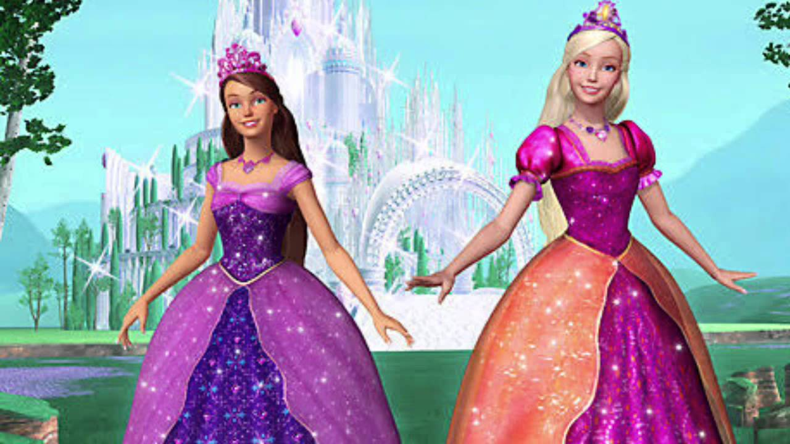
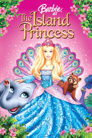

Castelo de Diamante
Barbie e Teresa contam-nos o conto de fadas de Liana e Alexa, duas melhores amigas que partilham tudo, incluindo a sua paixão pela música. Um dia, as suas simples vidas mudam quando lhes oferecem um espelho encantado e decidem ajudar uma rapariga que está presa lá dentro.

⇡

Uma plebeia, moradora de um vilarejo, é muito parecida com a princesa do reino. Os destinos das duas se cruzam quando a princesa é sequestrada, e a moça humilde usa sua incrível semelhança com ela para tentar salvar das mãos do vilão.
⇡

Depois de sobreviver a um naufrágio, a pequena princesa Rosella cresce em uma ilha deserta, onde é acolhida e criada por uma família de animais. Dez anos depois, o príncipe Antonio descobre a ilha e convida Rosella para acompanhá-lo até o seu reino.
⇡